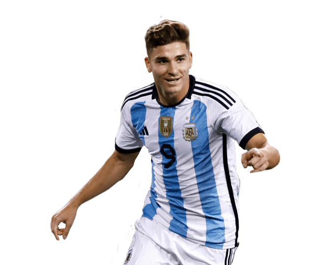
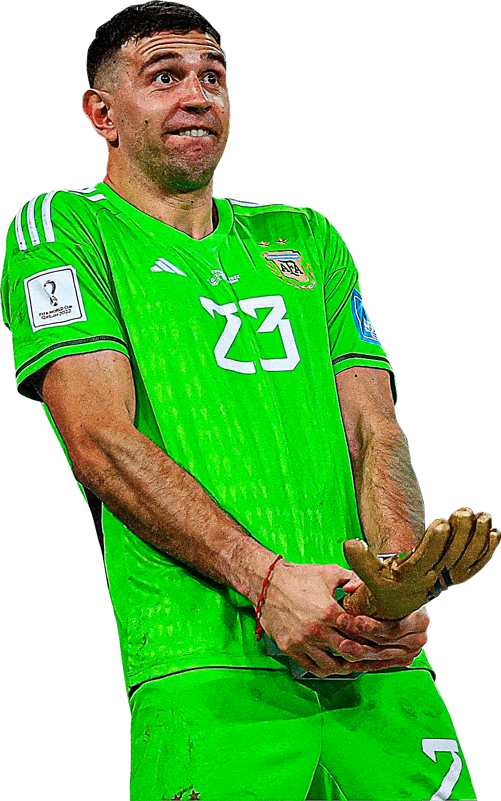

Campeones del Mundo 2022
Argentina, el país del tango y del fútbol, está en una fiesta total al ganar el Mundial de Qatar 2022. La gente está muy feliz, con abrazos y sonrisas por todos lados. Para los argentinos, este triunfo es más que una copa; es un momento de mucho orgullo y amor por el fútbol. En todas partes, en las casas, en las calles, se siente una alegría increíble. Argentina es campeona y en cada sonrisa se refleja la grandeza de un pueblo que ama su fútbol con intensidad.

La emoción embriaga a Argentina tras ganar el Mundial de Qatar 2022. El país se viste de celeste y blanco, celebrando con euforia en cada esquina. Este triunfo es más que un trofeo; es el fruto del esfuerzo y la pasión de toda una nación por el fútbol. En los rostros de los argentinos se refleja la felicidad pura, el orgullo de haber alcanzado la cima del mundo deportivo. Cada abrazo, cada lágrima de alegría, son testimonio de la grandeza de este logro, que une a un país entero en un solo grito de victoria.
Ganar el Mundial de Fútbol de Qatar 2022 no fue tarea fácil, pero finalmente Argentina se alzó como campeona del mundo. El camino estuvo lleno de desafíos, obstáculos y momentos difíciles, pero el equipo argentino demostró determinación, coraje y perseverancia en cada partido. Detrás de esta victoria histórica, se encuentra el talento y liderazgo indiscutible de Lionel Messi, quien con su magia en la cancha inspiró y guió al equipo hacia la gloria. Messi no solo es un genio del fútbol, sino también un símbolo de humildad y compromiso, que ha llevado a Argentina a lo más alto del podio mundial. En este momento de celebración, es importante reconocer y agradecer el esfuerzo y dedicación de todo el equipo, así como el inmenso impacto de Messi en el fútbol argentino y mundial. ¡Gracias, Lionel Messi, por traernos la copa a casa!
